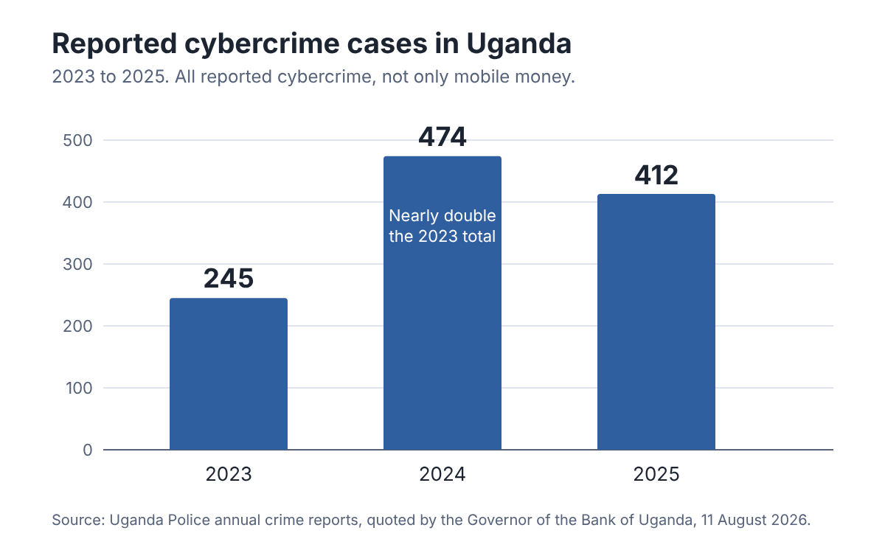

Think before you send.
Sente Safe helps students and job seekers in Kampala spot mobile money scams, protect their money and know what to do when something goes wrong.
“Sente” is the Luganda word for money. We are students at Victoria University Kampala, and one of us was targeted by a prize scam. This guide is what we wish every student had before their phone rang.

-
Check before you pay
Run an offer through our checklist before any money leaves your phone.
Open the checklist -
Been scammed?
The first hour matters. Follow the steps and report it.
See what to do -
Why it matters
See the evidence and a real story from one of our group.
Read the problem
Scam tip
A real prize never asks you to pay first.
The problem
What these scams are, where they happen and the evidence that they are real.

Scammers in Uganda phone, text or message people and promise a job, a scholarship, a loan or a prize. Then they ask for money first, usually through mobile money, because it is fast and hard to take back. Many of them use SIM cards registered in other people’s names, so they are difficult to trace. It happens in Kampala and across the country.
Students and job seekers are easy targets. When money is tight, a big reward for a small “fee” can sound reasonable.
What the evidence says
| Year | Reported cases |
|---|---|
| 2023 | 245 |
| 2024 | 474 |
| 2025 | 412 |
These figures come from the Uganda Police annual crime report, quoted by the Governor of the Bank of Uganda in August 2026. They cover all reported cybercrime, not only mobile money, but cases nearly doubled between 2023 and 2024 and stayed high in 2025. The Governor also said losses run into billions of shillings each year [2].
A real court case. In February 2026 a court sentenced a man to three years in prison. He had pretended to be a politician, offered fake government jobs and scholarships, and collected mobile money using SIM cards registered to other people. His victims included teachers, health workers and farmers. The Uganda Communications Commission (UCC) told the public to check any job or scholarship offer that asks for money first [1].
One of our group was targeted
In July 2024 a stranger phoned me and said I had won UGX 3,000,000 in an MTN prize draw. To receive it I had to send UGX 200,000 first. I had never entered any draw, but money was tight and I was tempted. So I tested him: I said, take the 200,000 out of my 3 million and send me the rest. He swore at me and switched off his phone. That was when I knew it was a scam.
Kawuma Abdulkarim, group member [7]
Sources are numbered and listed in full under About and sources.